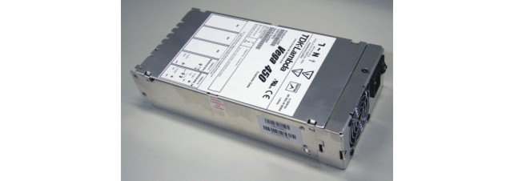

External utility power supply (V93000 systems)
The optional external utility power supply for V93000 Smart Scale systems provides extra power for active components like relays, operational amplifiers, and buffer on the DUT board or probe card. The supply is available on 4-row utility pogo blocks of the Large test head and the DUT Scale interface on A-test head, Compact test head and Small test head.
| Supported V93000 systems : Smart Scale, Pin Scale, HSM |
The following figure shows the external utility power supply unit.

The external utility power supply provides three power lines and remote sensing on all three lines:
- +5.0 V at 8 A
- +3.3 V at 6 A
- -5.0 V at 6 A
The supply is mounted inside the support rack (LTH, STH) or on the manipulator or engineering cart (ATH, CTH).
On EXA Scale test system the external utility power supply is always included in the Utility Board.
Functional changes
- Introduced in SmarTest 7.2.0